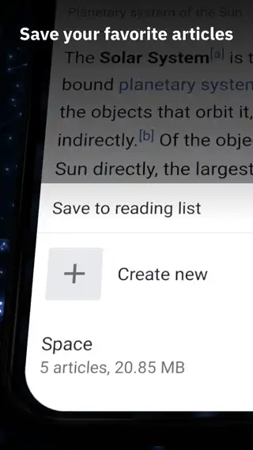
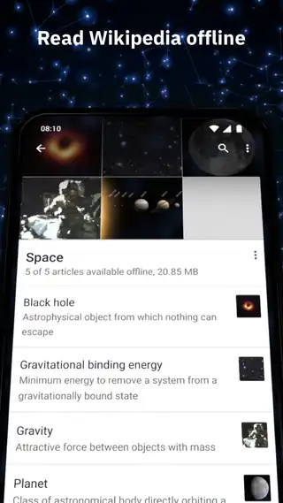

ويكيبيديا
إنترنت ومتصفحات
ويكيبيديا الرسمية لأندرويد التطبيق هو مصمم لمساعدتك على العثور على اكتشاف واستكشاف المعرفة في ويكيبيديا.ولتسوية رهان مع أحد الأصدقاء عن طريق عمل بحث سريع من خلال التطبيق، أو الغوص في المقالات، الصور، و المقالات الموصى بها، وأكثر باستخدام بحث تغذية.مع أكثر من 39 مليون مقالة في ما يقرب من 300 لغة، الم
✓ ترخيص مفتوح (Apache-2.0) · آخر تحديث: 2026-11-23
r/50619-r-2026-11-18الإصدار
101.8 MBالحجم
Apache-2.0الرخصة
Open in Kanzتحميل APK (101.8 MB)
Download APK
SHA-256: ce0cd4a602bc6ae28d1b9e84623346a807b01d28a728a2f1dac10c5a6f37f367


امسح الكود لفتح صفحة التطبيق
Scan to open this app page
لو كنز مش متثبت عندك: نزّل متجر كنز.
Not installed? Get the Kanz store.